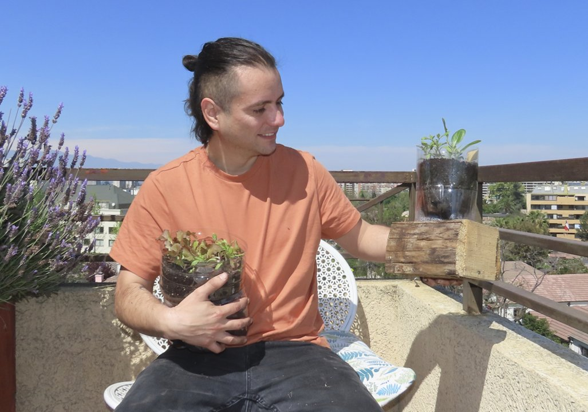
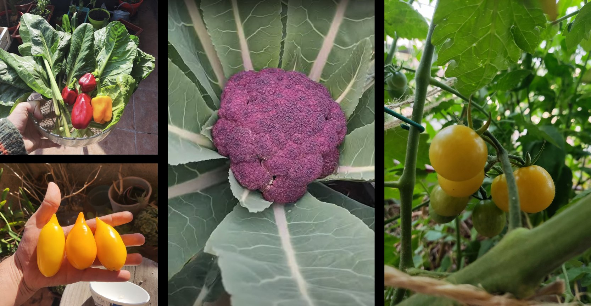

Hogar
Departamento resiliente
Desafío
Departamento urbano de 80m² en Santiago sin conexión con la naturaleza. Alto consumo de agua, acumulación de residuos orgánicos y nula producción de alimentos.
Diagnóstico
Evaluación con la plataforma de indagación regenerativa reveló oportunidades en gestión hídrica, compostaje domiciliario y producción en espacios reducidos (balcón y ventanas).
Solución
Diseño de sistema integrado: huerto vertical en balcón, vermicompostera, riego por capilaridad y plan de biodiversidad con plantas nativas y aromáticas.
Resultado
Reducción del 40% en residuos enviados a vertedero. Producción mensual de hierbas y hortalizas de hoja. Mejora perceptible del bienestar y conexión con ciclos naturales.



